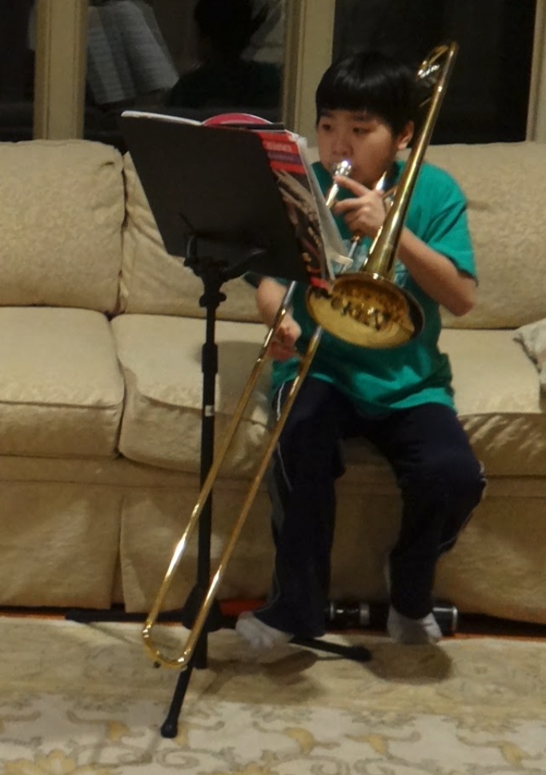
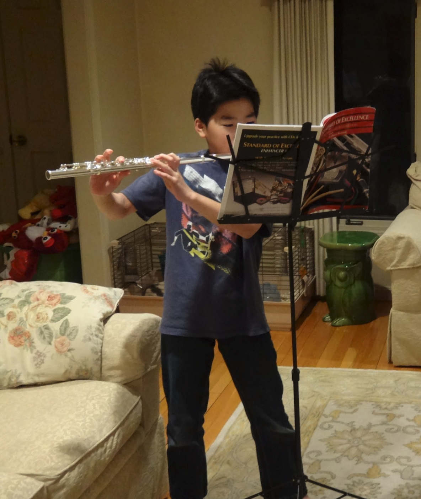

Band Members
Eddy Lu

Eddy Lu, a 12-year-old trombonist hailing from the city of New Orleans,
has dedicated his life to the art of creating epic melodies.
Inspired by the rich musical heritage of his hometown,
Eddy fell in love with jazz at an early age. His trombone playing is a
testament to his deep connection with the genre.
When he's not mesmerizing audiences with his smooth and expressive tones,
Eddy enjoys immersing himself in the local music scene, jamming with fellow musicians,
and discovering new talents. An adventurous spirit, Eddy also has a passion for travel and loves exploring new cultures,
seeking inspiration from diverse musical traditions around the world.
Catherine Huang
Catherine Huang is a talented singer-songwriter who gained fame through the Jackson Jills Acapella.
Her distinct vocals and heartfelt lyrics have captivated fans around the world.
At 13 years old, Catherine Huang is a gifted pianist with roots in Shanghai, China. Her journey with
the piano began at the age of six, and she quickly developed a deep connectionfor the instrument.
Catherine enjoys immersing herself in the world of poetry. She can often be found curled up with a good book,
finding solace and inspiration in the written word. Catherine also has a love for nature and finds peace
during long walks in serene gardens, which further fuels her creativity.
Tommy Lee

Tommy Lee, a 30-year-old flutist originally from London, England,
is known for his enchanting and lyrical playing. With a profound appreciation for the
delicate nuances of the flute, Tommy's performances transport listeners to a world of musical enchantment.
Outside of music, Tommy is a self-proclaimed foodie and loves exploring different cuisines.
He spends his free time experimenting in the kitchen, creating delightful dishes inspired by his global travels.
Tommy is also an ardent supporter of environmental causes
as he believes in preserving the beauty of nature for future generations.
Jake Liang

Jake Liang is a talented singer-songwriter who gained fame through The Grandmaster Jam Band.
His distinct vocals and heartfelt lyrics have captivated fans around the world.
James Liang, a 26-year-old powerhouse vocalist from Los Angeles, California, possesses a voice that captivates hearts.
From a young age, Jake was drawn to the transformative power of music, and his soulful voice became his instrument of choice.
Beyond his musical pursuits, Jake is a passionate advocate for mental health awareness.
He volunteers at local organizations, using his platform to destigmatize mental health issues and promote self-care.
Jake also finds solace in nature, often taking long hikes in the nearby mountains to find clarity and inspiration for his musical artistry.